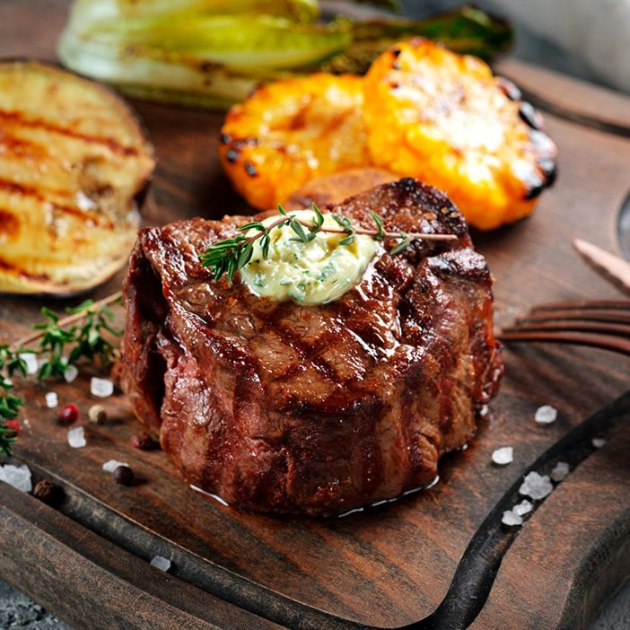

Filet Mignon

One of the finest cuts of beef in the world, Filet Mignon!
This fine cut of beef comes from the tenderloin of a cow.
This muscle only comprises of 1% of the entire body, leading to its expensive price.
It can be prepared in a variety of ways, however this recipe is sure to satisfy the taste buds!
Enjoy with guests or by yourself!
Ingredients
- Filet Mignon (6 oz.)
- Salt and black pepper
- Extra-virgin olive oil
- Butter
- Chopped Rosemary
Steps
- Preheat oven to 450 degrees (F)
- Season steak with salt and pepper (both sides)
- Heat olive oil in a pan with medium-high heat until it shimmers
- Cook filet mignon 5 minutes each side
- As the filet is cooking, baste with butter
- Transfer the skillet to an oven and cook to your liking (5 minutes for medium)
- Remove the pan and let rest 5 minutes before slicing
Return to Homepage